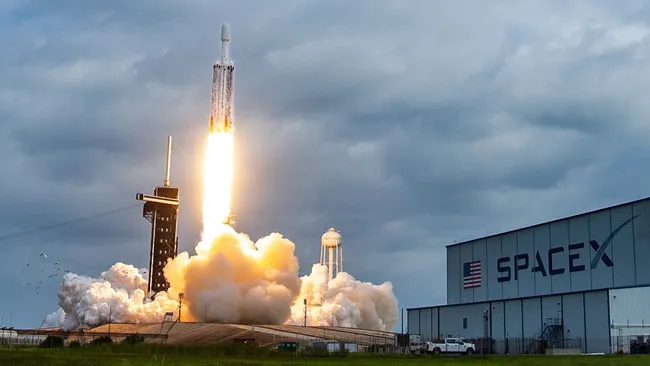

Follow Space.com's rocket launch blog for the latest on when the next rocket launch will be and how to follow it live.
The pace of rocket launches has ballooned in recent years, making it a challenge to know what mission is launching and when. If there is a rocket launch today, you'll find details below on the launch vehicle, mission and where to watch live, if a webcast is available.
No rocket launch today? Check out our Space Calendar for a full list of upcoming launches, night sky events and more.
SpaceX will launch a batch of Starlinkinternet satellites fromVandenberg Space Force Base (VSFB), in California, Friday. Liftoff is expected Nov. 6, at4:13 p.m. EDT (2013 GMT). Watch it live on SpaceX's mission website, as well as on the company's X account, beginning about five minutes before launch.
This mission, Starlink 11-14, will launch 28 Starlink satellites from VSFB's Space Launch Complex-4E (SLC-4E). This will be the 8th flight for this Falcon 9 first-stage booster, B1093, which is expected to land about 8.5 minutes after launch on SpaceX's Of Course I Still Love You droneship, in the Pacific Ocean.
This will be SpaceX's 146th launch of 2025.
SpaceX will launch a batch of Starlink internet satellites from the Cape Canaveral Space Force Station(CCSFS), in Florida, Wednesday. Liftoff is expected from Space Launch Complex-40(SLC-40), during a window that opens Nov. 5 at 8:25 p.m. EDT (0025 GMT, Nov. 6). Watch it live on SpaceX's mission website, as well as on the company's X account, beginning about five minutes before launch.
This mission, Starlink 6-81, will be the 5th flight for this Falcon 9 first-stage booster,B1094, which is expected to land about 8.5 minutes after launch on SpaceX's Just Read the Instructions droneship, in the Atlantic Ocean.
This will be SpaceX's 146th launch of 2025.